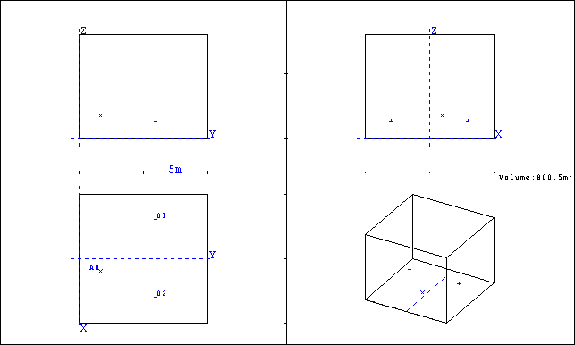
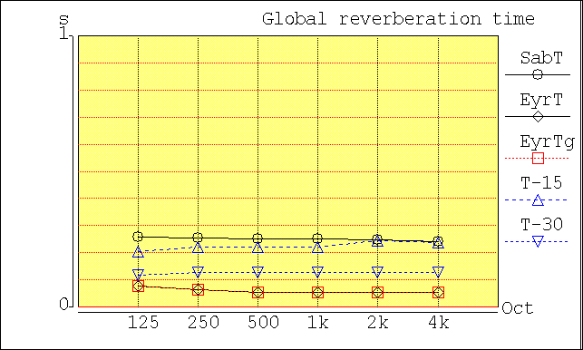
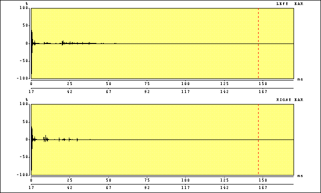

Anechoic Room Description
An anechoic, or echoless room, is a room that has total, or nearly total, absorption on all surfaces. This means that any sound that hits a wall is completely absorbed and none is reflected.Because the anechoic room has no sound reflections, there is no reverberation or reverberation time (RT) and the impulse response is a true impulse, meaning it looks like a spike.
Anechoic rooms are used in measuring sound generated by various objects and in acoustic testing of people and animals.
Being outdoors on a calm day well away from any reflecting surfaces is a good approximation to an anechoic room.
Geometry
For these simulations an anechoic room of dimensions 10m x 10 m x 10m was created in CATT acoustics as shown in the figure below
Reverberation Time
The reverberation time (RT) in each of the six octave bands from 125 Hz to 4 kHz. The estimated RT computed using the Sabine equation (circles) and Eyring equation (diamonds) equations is plotted along with the estimated reverberation time computed using ray tracing from 4*T-15 and 2*T-30 (up and down triangles). T-15 is the computed time for the sound energy level to drop by 15 dB from th einitial energy level and T-30 is the time for the sound energy level to drop from -5 dB to -35 dB from the initial energy level .
Absorption
The absorption coefficients for the anechoic wedges are shown in the table below
| Absorption Coefficient | ||||||
| Material | 125 Hz | 250 Hz | 500 Hz | 1 kHz | 2 kHz | 4 kHz |
| Wedges | 0.96 | 0.98 | 0.99 | 0.99 | 0.99 | 0.99 |
Impulse Response
The impulse response for the room as computed by CATT is shown in the figure below. Notice that even this room does not have a perfect impulse for an impulse response. The small amount of reflection gives rise to a minor tail on the impulse respone.


|
These animations, auralizations, and visualizations are © 2006 by
Ralph T. Muehleisen and are licenced under a
Creative Commons Attribution-NonCommercial 2.5 License.
|